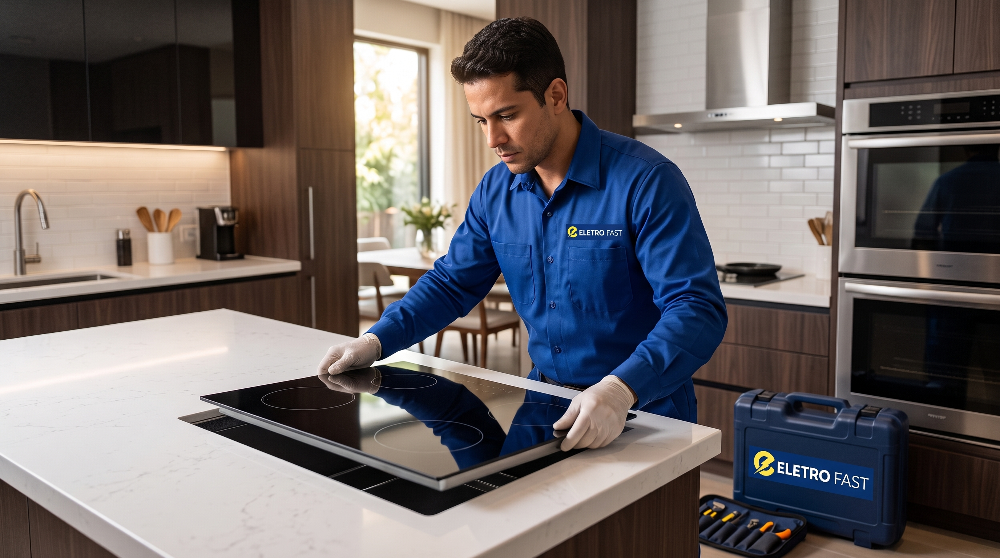

Cooktop ou fogão não liga: 7 causas mais comuns (e o que fazer)

Cooktop que não liga é um dos chamados mais comuns que recebemos nas nossas unidades em Curitiba. Antes de imaginar o pior, vale entender que boa parte dos casos tem causas simples — e algumas até resolvem sem a necessidade de abrir o equipamento. Outras, no entanto, exigem avaliação técnica para não colocar em risco a sua segurança ou a garantia do aparelho.
Antes de qualquer coisa: 3 verificações seguras
Sem desmontar nada, você pode checar:
- Energia e disjuntor: confirme se o disjuntor do circuito não desarmou e se outras tomadas próximas estão funcionando normalmente.
- Trava de segurança (child lock): muitos cooktops têm um bloqueio para crianças que, quando ativado, impede qualquer comando — o painel pode parecer "morto" mesmo estando ligado.
- Registro de gás: em modelos a gás, confirme se o registro está aberto e se o botijão ou a rede não está com o fornecimento interrompido.
Se depois dessas checagens o problema continuar, o próximo passo é entender qual das causas abaixo pode estar afetando o seu equipamento.
7 causas mais comuns para o cooktop não ligar
- 1. Falha na placa eletrônica de comando: a placa que interpreta o toque no painel pode falhar com o tempo, principalmente em modelos touch.
- 2. Sensor de indução com mau contato: em cooktops de indução, sensores de temperatura ou de presença de panela desalinhados impedem o acionamento.
- 3. Trava de segurança ativa: como citado acima, é a causa mais simples e também uma das mais frequentes.
- 4. Problema na instalação elétrica: conexões soltas ou mal dimensionadas no ponto de instalação podem interromper a alimentação do equipamento.
- 5. Ignição eletrônica com defeito: em modelos a gás, o módulo de ignição pode parar de gerar a faísca necessária para acender o queimador.
- 6. Proteção térmica acionada: superaquecimento em uso contínuo aciona um desarme automático de segurança, que só é reiniciado após o equipamento esfriar.
- 7. Desgaste natural após anos de uso: componentes eletrônicos têm vida útil, e cooktops com mais tempo de uso tendem a apresentar falhas intermitentes antes de parar de vez.
Cooktop de indução x cooktop a gás: os problemas mudam
Cooktops de indução dependem quase inteiramente da parte eletrônica — sensores, bobinas e placa de comando. Já os modelos a gás combinam eletrônica (ignição, painel touch) com componentes mecânicos, como registros e queimadores. Isso significa que o diagnóstico e as peças envolvidas em cada conserto são bem diferentes, mesmo quando o sintoma parece o mesmo: "não liga".
Quando chamar assistência técnica
Procure um técnico credenciado se:
- O disjuntor desarma toda vez que o cooktop é ligado.
- O painel exibe algum código de erro.
- Você sentir cheiro de gás — nesse caso, feche o registro, ventile o ambiente e não tente ligar o equipamento até a causa ser identificada.
- O problema persiste mesmo após as verificações simples acima.
Seu cooktop parou de funcionar?
A Eletro Fast faz diagnóstico e instalação residencial de cooktops em Curitiba, com peças originais e equipe credenciada.
Como funciona o diagnóstico da Eletro Fast
Nossa equipe avalia o equipamento na sua casa ou em uma das nossas unidades, apresenta o diagnóstico e o orçamento antes de qualquer serviço, e utiliza peças originais compatíveis com a marca do seu cooktop. Veja mais sobre o atendimento residencial na página Instalação residencial ou confira se sua marca está entre as marcas credenciadas.